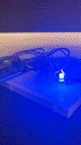

Example Student's Assignment 1: Blink!

Cirucuit!
Cirucuit!
Schematic - Red

Schematic - Red
Schematic - Green

Schematic - Green
Schematic - Blue

Schematic - Blue
Code:
Code:
void setup() { pinMode(9, OUTPUT); // initialize digital pin 9 as an output. This is the Red LED. pinMode(10, OUTPUT); // initialize digital pin 10 as an output. This is the Green LED. pinMode(11, OUTPUT); // initialize digital pin 11 as an output. This is the Blue LED. } void loop() { int delayTime = 1000; // create an int variable to be used for delay. Resets the variable after the while loop. while (delayTime > 0.1) { // Repeat the sequence of blinking. digitalWrite(9, HIGH); // turn the Red LED on. delay(delayTime); // wait for a little bit. digitalWrite(9, LOW); // turn the Red LED off. digitalWrite(10, HIGH); // turn the Green LED on. delay(delayTime); // wait for a little bit. digitalWrite(10, LOW); // turn the Green LED off. digitalWrite(11, HIGH); // turn the Blue LED on. delay(delayTime); // wait for a little bit. digitalWrite(11, LOW); // turn the Blue LED off. delayTime = (delayTime/1.2); // reduce the delay after every loop } }